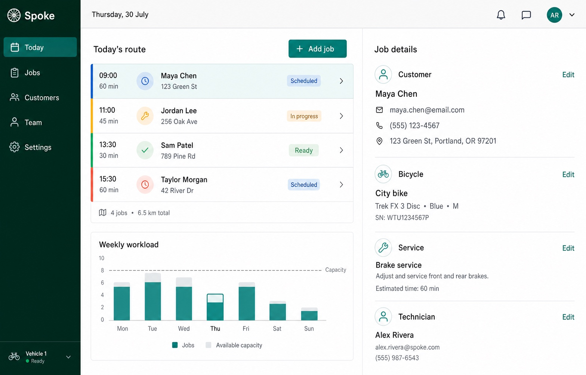

Project brief01
Start with the
right problem.
A feedback tracker for freelance designers.
- Who it helps
- Independent designers
- First milestone
- One clear revision queue
Free & open source v0.7.0
Give your AI agent a way to think, plan, and build. From the first good question to a product you can put to work.
Your tools. Your code. A shared direction.
A feedback tracker for freelance designers.
Make decisions once. Carry them into the build.
Check the product against the problem it set out to solve.
Less starting over.
More moving forward.
Built to work inside
the agent you use.
A little more studio. A lot more direction.
You don’t need a perfect specification. Bring a goal, an existing project, or a change you want to make. Studio OS helps turn it into a clear path forward.
Find your starting pointExplore the problem, agree on the scope, and make product decisions before choosing a solution.
Briefs, decisions, and progress live in your repository. Pick up the work without reconstructing the conversation.
Technical checks, user scenarios, and product outcomes each get their own evidence.
A connected way of working
Start fresh or work with what exists. The workflow adapts to the project and loads the context needed for the current stage.
Discuss the idea, research what matters, and agree on a brief.
Problem → Accepted scopeDesign the experience, plan the architecture, and build in increments.
Decisions → Working productVerify the behavior, review the outcome, and prepare the release.
Evidence → Release decisionA new product moves from problem understanding to verified outcome.
The route is adapted to the work. Research and design stages are selected when needed; new features, bugs, and refactors get their own paths.
Native subagents, when your host supports them.
The right help, at the right moment
The lead agent can delegate focused tasks to available models, then review their results against the same plan.
No subagents available? The workflow continues with one agent. Model choice, cost, and token savings depend on your host and task.
Meet a possible outcome
Spoke, a mobile bicycle repair workspace. A fictional walkthrough of a first milestone, from a dispatch problem to a useful operations tool.

“Help our dispatcher see what’s scheduled, active, and ready.”
Create a request, assign a technician, and track the job.
Verify that loop on the target devices, then review release readiness.
Make it yours
Install the packaged plugin for Codex or Claude Code, or use the universal Bootstrap with another filesystem-capable agent.
Add the GitHub marketplace, then install Studio OS:
codex plugin marketplace add Aleksei2507/studio-os
codex plugin add studio-os@studio-os
Start a new Codex session, then use Use Studio OS with a product request.
Add the GitHub marketplace, install Studio OS, then reload plugins:
/plugin marketplace add Aleksei2507/studio-os
/plugin install studio-os@studio-os
/reload-plugins
Start with /studio-os:studio-os, then add your product request.
Download the latest release archive, verify its checksum, extract it, and give the agent this entry contract:
Read and follow <studio-os-root>/adapters/universal/BOOTSTRAP.md.
Use Studio OS.
I want to build...
The release archive contains the Runtime core. It does not require npm at runtime.
Questions
Yes. Studio OS is open source under the MIT license. Your host agent and model usage are separate.
When your host supports it, Studio OS plans bounded subagent tasks, selects from available models, and reviews their results. It uses a single agent when delegation is unavailable. Model choice and token savings depend on the host and the task.
The host AI agent performs the work. Studio OS supplies the workflow, stage boundaries, decision contracts, standards, and quality gates that keep that work coherent.
No. Codex and Claude Code have packaged adapters. Other agents with filesystem access can enter through the universal Bootstrap included in each release.
Not by default. Brownfield onboarding records evidence from the current codebase and interface system so later stages can preserve or deliberately revise accepted constraints.
They overlap in structured AI-assisted product delivery. BMAD is a broad agile framework with specialized agents and workflows from planning into implementation. Studio OS emphasizes a development studio operating model: inferred routing, one active Runtime, project-local decisions, and separate gates for code completion, product outcome, and release. It is not presented as a drop-in replacement.
Studio OS is currently alpha software. Its contracts and regressions are actively evolving, so use versioned releases and review project decisions.